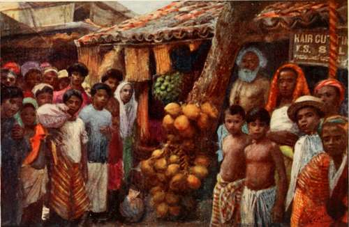

Chapter VII. Colombo
Description
This section is from the book "Ceylon", by Alfred Clark. Also available from Amazon: Ceylon.
Chapter VII. Colombo
Colombo, the chief town of Ceylon, on its western side, has been described as the " Halfway House of the East." Its position and its great artificial harbour, one square mile in extent, makes it a convenient place of call for vessels trading with India, the Far East, and Australia. It is no uncommon sight to see half a dozen magnificent mail-steamers at anchor respect to great men or priests, put the palms of their hands together and raise them to their faces in the attitude of worshipping, crouching low at the same time.
There is no word nor phrase in either Singhalese or Tamil exactly equivalent to the English "Thank you." The recipient of any gift or attention merely remarks in acknowledgment that it is good, and that he is pleased. Europeans often hurt the feelings of natives unintentionally by the use of phrases not familar to them. An officer of Government deeply offended a head-man whom he wished to commend for his energy in carrying out some order by saying that he "had worked like a horse" together, with twenty or thirty cargo-steamers discharging machinery and goods from Europe and taking in tea and other products of the island ; also sailing-vessels, of strange shape and rig, from all parts of the East.
If Colombo is approached in the north-east monsoon, the pure azure of the placid sea, the long lines of graceful palms along the shore, and the distant mountains, dominated by Adam's Peak, are sure to deeply impress the traveller, even though he is unable to detect "the spicy breezes" which "blow soft from Ceylon's isle." If, however, the southwest monsoon happens to be breaking, the scene will be very different—a sky covered by inky clouds, heaving agate waves, ridden by countless " white horses," and millions of palm-trees tossing their long leaves wildly. The mile-long breakwater will be covered with acres of foam, and geysers of white water shooting a hundred feet high. Within its sheltering arms, however, all is at rest, and a landing can be effected whatever the state of the weather.
" The Fort " is the name still given to a neck of land lying to the south of the harbour, where, till about forty years ago, stood a great fort built by the Dutch. Here may now be found the Government offices, the hotels, the offices of merchants, and large European shops. Apart from the brown people swarming everywhere, there is nothing Oriental in the appearance of this part of the town. On landing, visitors are always assailed by sellers of curios, such as figures of elephants in ebony, models of native canoes, and coconut-wood walking-sticks. Moor gem-dealers are also a great nuisance, and are often glad to accept one rupee for a " sapphire " for which they had asked five hundred !
To the south of the Fort stretches a fine esplanade called Galle Face, where many of the Colombo residents drive and walk in the evening.
A stranger to the island would, no doubt, make without delay for the Pettah, or native quarter of the city. He will find it thronged with brown folk, not only petticoated and combed Singhalese, shaven-headed Tamils, and white-capped Moormen, but turbaned men from Central India, Parsis, in semi-European costume, Arab horse-dealers, Afghan cloth-sellers, and other representatives of the East.
From the numerous godowns, or warehouses, come the acrid odour of leaf tobacco, the sour smell of punac, or coconut waste, and other evil emanations. In their dark interiors squat chettis, the usurious money-lenders of the island, scratching their accounts on strips of palm-leaves. The streets are lined with small native shops, called boutiques—a word derived from the Portuguese. Here are sold everything natives require—bright prints for clothing, coarse crockery, pottery, rice, pungent curry stuffs, fruits, and vegetables. Some of these last look strange enough to European eyes, such as enormous jaks> the largest edible fruit in the world, sometimes weighing fifty pounds ; also rambutans, a pink fruit covered with soft spines ; gruesome masses of sticky tamarind fruit, " drumsticks" for curry, and egg-fruits. One pound sterling would be sufficient to buy up the entire stock-in-trade in some of these tiny shops.
Here may be seen a small apartment, reeking with filth, in which an old woman dispenses hoppers, or hot rice-cakes. Over the doorway hangs a board on which is roughly inscribed "Dining Hall"! On the opposite side of the street is a tiny den, in which a barber squats, shaving the head of a customer. This establishment has the sign, boldly displayed, " Hair-dressing Saloon "! Not far off the following legend appears over a door: " Best Fortune-telling Place".
There are many curious vehicles in the streets, chiefly great two-wheeled bandies, or bullock carts, with immense coconut-leaf hoods, and drawn by pairs of bullocks, on whose sinewy necks rest heavy wooden yokes. These are used for the transport of goods, and often carry a ton and a half of tea, rice, or coconut fibre. The cries of the drivers, " Mak!" " Pitta !" (Right! Left!), to their bullocks are very familiar sounds, and are sometimes supposed by Europeans to be " Mark," " Peter "—the names of the beasts! Small spidery-looking hackeries, or light carts, drawn by a single bull, and carrying not more than two passengers, rattle about. The bullocks are of a smaller breed than those yoked to bandies, and are high-spirited, shapely little creatures. Many of them can trot as fast as horses, and hackery races are a favourite pastime of the Singhalese. Tail-twisting and prods with sharp-pointed sticks are the methods of driving used. Scores of 'rikshas, imported from Japan, ply for hire, and are much used by residents and visitors.
Native Shops In The Pettah. Colombo.
There is a palm-bordered fresh-water lake, four hundred and sixteen acres in extent, in the centre of Colombo, in the not over-clean waters of which hundreds of natives bathe daily, scores of bullocks are washed, and lines of dhobies, or washermen, ply their trade.
The method of washing clothes employed by these last seems to strangers very rough and ready, to say the least. It consists in folding the article to be washed into a sort of flexible truncheon, and beating it on a flat stone, with an occasional dip in the water. An essential part of the process seems to be the grunt emitted by the dhobie with every swinging blow. No soap is used, yet the clothes are washed snowy white, but suffer in texture severely. Dhobies are anathema to English residents, not only on account of the damage they do, but because they are more than suspected of often hiring out the pretty dresses and drill coats and trousers of their clients to natives aping European dress and customs at weddings and other festivities.
In the centre of the lake is Slave Island, which is now connected with the rest of the town by causeways. In old days the Dutch, being apprehensive of risings among their slaves, used to take them every evening in boats to the island, where they were kept confined till the morning.
The residences of the Europeans are chiefly to be found in the Cinnamon Gardens, where, however, little cinnamon now grows. On arrival at this part of the city, no stranger can fail to be struck with the brilliant colours of everything ; the red roads, and the intense green of the coconuts, plantains, and other unfamiliar vegetation, contrasting strongly with the bright dresses of the natives.
There are many fine houses in large compounds or gardens, full of coconut, mango, jak, breadfruit and other trees. Of these, the jak is perhaps the most remarkable. When young, it bears fruit on its branches ; when past maturity, on its trunk ; and in its old age, from its roots. The blazing red and yellow flowers of leafless flame-trees, the gorgeous purple of bougainvillea creepers, and the peculiar yellow-green leaves of lettuce-trees are to be seen everywhere. In uncultivated marshy spots pitcher-plants grow luxuriantly.
Continue to: